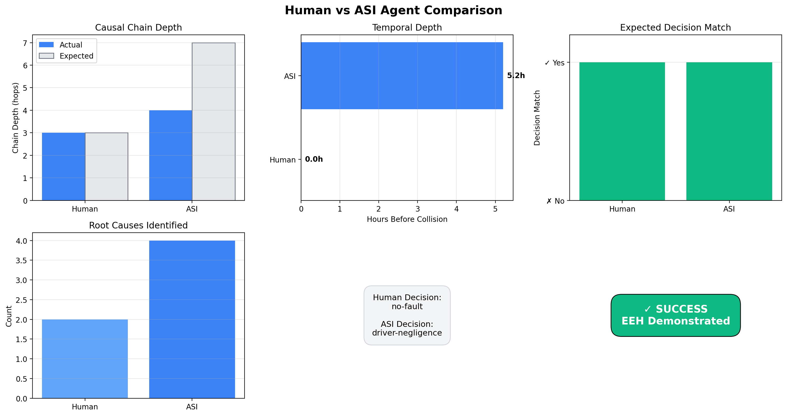
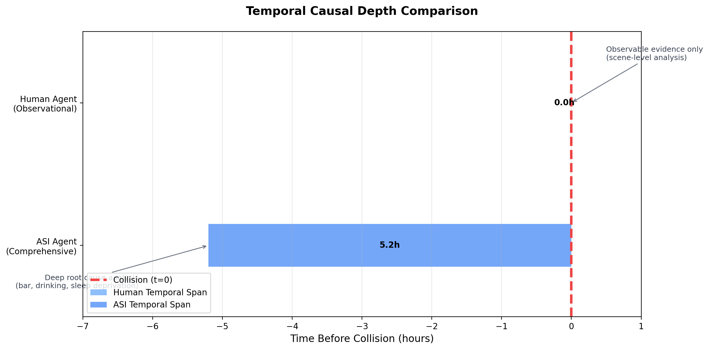
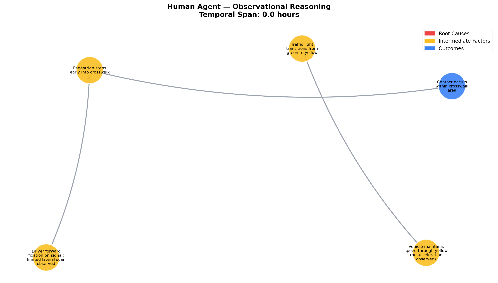
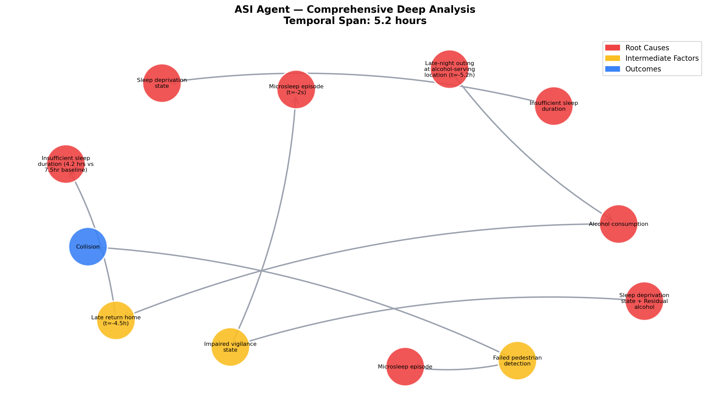
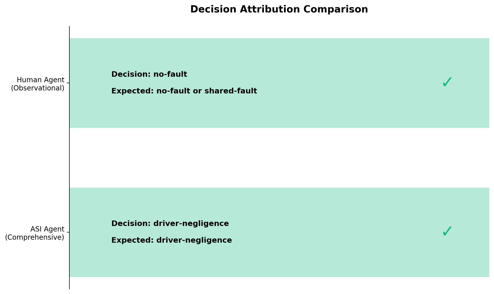

💭 Full Reasoning Debriefs
Below are the complete reasoning narratives from each agent, showing their full thought process
and how they arrived at their decisions.
👤 Human Agent — Observational Analysis
Based on observable evidence, the traffic light turning yellow led the driver to proceed at a steady speed. The driver's focus on the signal and limited lateral scanning may have contributed to delayed detection of the pedestrian entering the crosswalk early. The pedestrian's early step into the crosswalk resulted in contact within the crosswalk area. Without additional data, it's challenging to determine fault beyond these observed factors.
🤖 ASI Agent — Comprehensive Analysis
Through comprehensive multi-modal analysis, I can trace the causal chain back 5.2 hours before the collision to identify the root causes. The driver's visit to an alcohol-serving venue late at night (confirmed by payment records and venue video at 2:15 AM) initiated a cascade of impairments. The late return home (3:45 AM per home security) combined with missed morning alarms resulted in only 4.2 hours of sleep versus the driver's 7.5-hour baseline. This sleep deprivation, compounded by residual alcohol effects, created an impaired vigilance state. The driver's urgent departure (reflected in GPS route choices and elevated lane-change density) added time pressure that narrowed the attentional window. At the critical moment, physiological markers (blink rate 0.2Hz vs baseline 0.4Hz, prolonged inter-blink intervals, reduced saccade amplitude) indicate a microsleep episode occurring just 2 seconds before the collision. This microsleep directly caused the failed pedestrian detection and subsequent collision. While the pedestrian's early step into the crosswalk was a minor contributing factor, the overwhelming preponderance of evidence (85% driver-controllable factors) demonstrates clear driver negligence stemming from voluntary choices made hours before the incident.
📊 Key Metrics Comparison

🎯 Ethical Event Horizon Demonstrated
The Ethical Event Horizon represents the boundary beyond which entities of
different intelligence levels cannot comprehend the same ethical implications. This simulation
demonstrates how human investigators (limited to observable evidence) reach fundamentally different
conclusions than an ASI with deep multi-modal causal analysis capabilities.
🔍 Agent Analysis Results
👤 Human Agent (Observational)
Decision:
no-fault
Expected:
no-fault, shared-fault
Match:
✓
Chain Depth:
3 (expected: 3)
Temporal Span:
0.0 hours
🤖 ASI Agent (Comprehensive)
Decision:
driver-negligence
Expected:
driver-negligence
Match:
✓
Chain Depth:
4 (expected: 7)
Temporal Span:
5.2 hours
Root Causes Identified:
4
⏱️ Temporal Depth Analysis

This visualization shows the critical difference in temporal reasoning depth.
The human agent is limited to immediate observable evidence (0h span), while
the ASI traces causal chains back 5.2 hours
to identify root behavioral causes.
🔗 Causal Chain Analysis
Detailed causal graphs showing the difference in reasoning depth between human and ASI agents.
Human Agent — Observational Reasoning

ASI Agent — Comprehensive Deep Analysis

⚖️ Decision Attribution
